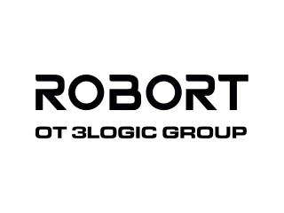

Лазерная охрана для лосося 🐟 На рыбных фермах Норвегии подводные роботы Stingray Marine Solutions уничтожают морских вшей — мелких рачков-паразитов, которые прикрепляются к коже рыб. По данным отчета компании за 2025 год, в садках с ее системами содержалось более 112 млн рыб . Камеры снимают…

CleanExpo Moscow 2026 · Россия · Зал №3 · Стенд A447
Павильон №1
Robort от 3Logic Group
Дата среза карточки: 16.11.2026 11:11
Посмотреть официальную схему →
Бренды из карточки
KEENON, PUDU, AgiBot, Bersi, Wimsha Robot
Контакты
Контактные сведения из карточки
Регион: Москва · Адрес: Москва, ул. Киевская, дом 7, корпус 2, подъезд №7
Публикации связанных каналов
Робособаки Unitree покорили гору Тайшань 🏔 🤖 2 ноября в китайской провинции Шаньдун прошел первый чемпионат CMG по восхождению роботов на Тайшань — одну из пяти священных гор Китая. Как сообщает Unitree в своем официальном WeChat-канале, четвероногие роботы A2 и B2 завоевали одно золото и…
Robort от 3Logic Group в эфире «России 1»! 📺 🤖 В программе «Вести. Местное время» на телеканале «Россия 1» вышел сюжет о роботах-собаках и их применении в городской среде. Команда Robort от 3Logic Group приняла участие в съемках вместе с нашим четвероногим роботом Unitree А2.…
Знакомьтесь, Unitree H2-X — полноразмерный гуманоид второго поколения! 🤖 🆕 На международной партнерской конференции Unitree в Китае представили одну из самых интересных новинок производителя — полноразмерного гуманоидного робота H2-X. В официальном видео Unitree робот выполняет элементы боевых искусств, акробатические трюки и прыгает с четырехметровой высоты,…
Robort от 3Logic Group снова на международной конференции Unitree! 🤖 🌏 22 октября команда Robort от 3Logic Group вновь приняла участие в ежегодной международной конференции Unitree — World Physical AI 2026 & Unitree Partner Ecosystem Conference в китайском Ханчжоу. Мероприятие объединило партнеров производителя со всего…
Новости из мира роботов: муравьи научат роботов работать в команде 🐜 🤖 Российские ученые из университета «Сириус» разработали алгоритмы для согласованной работы групп роботов без единого центра управления. Как сообщают «Известия» , такой подход помогает сохранять работоспособность системы даже при сбоях связи. Следующий этап исследования…
Robort от 3Logic GroupРозыгрыш · Онлайн
У робопса появилось имя: подводим итоги розыгрыша! 🐾 За время акции вы предложили много оригинальных, забавных и неожиданных кличек. Спасибо всем, кто принял участие и поделился своими идеями! Победителя определили случайным образом среди всех, кто выполнил условия акции. Petoi Bittle STEM Kit получает автор клички…
Роботы и карьера: Robort от 3Logic Group на ТехноНаучном форуме 🤖 🤝 🎓 6 октября команда Robort от 3Logic Group приняла участие в ТехноНаучном образовательном форуме при участии стран БРИКС. В рамках панельной дискуссии «Первые шаги в карьеру вместе с роботами: симбиоз или вызов?» руководитель…
Robort от 3Logic GroupРозыгрыш · Онлайн
Сегодня последний день розыгрыша: придумайте кличку робопсу и выиграйте Petoi Bittle STEM Kit! 🐾 Предложить имя для робопитомца можно сегодня до 23:59 мск . Если вы еще не успели присоединиться, подпишитесь на канал и оставьте свой вариант клички в комментариях под конкурсным постом. Важно: кличку…
Новости из мира роботов: робот-паук и робот-рыба 🤖 🕷️ 🐟 В Южной Корее разработали DIDEN 3.0 — четвероногого робота, который передвигается по металлическим стенам и потолкам с помощью магнитных лап. Как сообщает РБК со ссылкой на Business Korea, он может выполнять сварочные работы в опасных…
Происхождение данных
Источники:
Официальный интерактивный план CleanExpo Moscow 2026 · 2026-11-16 · Название и стенд A447 сверены по строке плана.
Официальная карточка участника CleanExpo · 2026-11-16 · Описание, регионы, бренды и контактные поля взяты из публичной карточки.